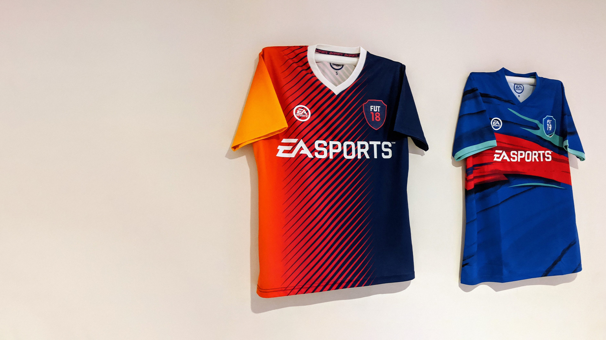

Juventus Home Kit
2005/06
In the summer of 2006, I embarked on a memorable journey to Turin, a city steeped in history and culture. My primary mission was to immerse myself in the vibrant atmosphere surrounding football, particularly to witness the passion of the local fans. As a devoted supporter of a football club based in Turin, I was determined to make the pilgrimage to the team's official store. The experience was nothing short of exhilarating; the store itself was a haven for fans, adorned with memorabilia and jerseys that encapsulated the rich history of the club. Amidst the sea of black and white jerseys, I carefully selected the iconic striped shirt, the emblem of my allegiance. The moment of purchasing that jersey was more than a transaction; it was a connection to the heart and soul of the city's football culture. Wearing that shirt became a symbol of my shared devotion with the passionate fans I encountered during my time in Turin. Every time I don the jersey, it serves as a tangible reminder of the unforgettable experience and the indelible mark that Turin left on my football journey.